Software & Updates
|
|
Software Tutorials - a
new page where you can discover how to install and configure useful software.
Updates
Packages that have been kept back
Change your Software Updates Country Location
Install Additional Software
Remove Additional Software
Lite Cleaner
Adding a PPA
File Encryption
Creating & Extracting Zip files
A word on changing Desktop Environments
IMPORTANT: Linux Lite is a heavily modified operating
system. As such we do not recommend you ever do a:
sudo apt-get dist-upgrade This command has the potential to break
your system.
Installing & Removing Software
Installing and removing software in Linux is much easier than in Windows. The vast majority of programs that you may want/need to install are all centrally located in what are called software repositories (repos). Rather than searching the web, downloading programs from various sites (some of which may not be reliable), running the installer, rebooting, etc., available software is all centrally located and available for installation in seconds. The packages/(programs) in the repositories are tested, approved for inclusion in the repos and securely signed to insure their validity.
There are a few common methods for installing and removing software. Linux Lite comes with the Synaptic Package Manager. When you already know the name of the program you want, Synaptic makes installing easy.
IMPORTANT: Before you run Install/Remove
Software for the first time, read this first.
Then come back to here to learn how to install and remove software.
To install software use the following steps:
1. Click on Menu, System, Install/Remove Software
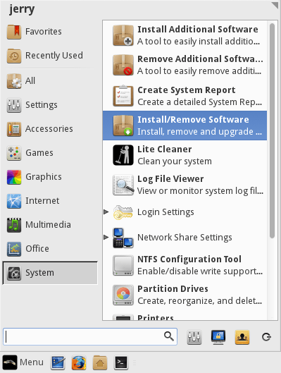
2. Make sure All is selected in the left pane and in the Quick Filter
or spy glass
 type in your search query. In
this example we will search for the 'audacious' music
player.
type in your search query. In
this example we will search for the 'audacious' music
player.

3. Double click on the package you want to install.
4. Some software will ask you to Mark additional required changes? These are also known as dependencies and are required for the program to function properly.

5. Click on Mark. Now hit the Apply button on the Synaptic toolbar. The software will install and a Menu entry will be created in the relevant Menu category. For audacious the Menu category would be Multimedia.

6. Go to the Menu and your new software will be there. An alternative way to find your new software is to click on Menu, Accessories, Application Finder. Type your program name in the Search box and the result will display on the right. Double click on the program name and it will launch for you.
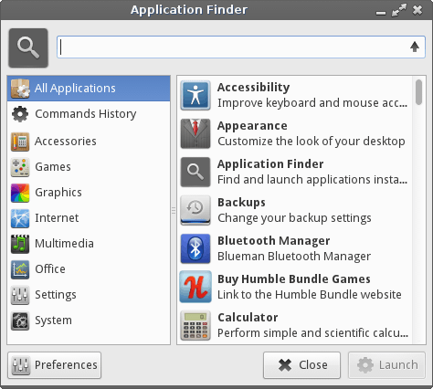
Uninstalling Software:
7. Uninstalling software is the reverse process of
installing software in the Synaptic Package Manager. Type
the name of the software into the Quick Filter or spy
glass
box.
8. Right click on the software and select Mark for Removal. Now hit the Apply button on the Synaptic toolbar and your software will uninstall. Be very careful with this process as you can inadvertently uninstall crucial system software. If you have any doubts, please search the net first to see if it is safe to uninstall the software. Synaptic is pretty good at warning you should there be any potential problems.
Keeping Linux Lite up to date is a simple process.
At the top of your Menu, you will see Install Updates.

We've made the update process as simple as possible. Simply click on Install Updates and you will be asked for your password. The program will then search for updates and if it finds any it will ask you if you want to continue. Type Y and then hit enter if you do.
(Note: The update process updates all software on the system that came from the repos. Unlike in Windows, there is no need to update individual software programs manually. When you run Install Updates, that will update all packages that have updates available for them.)
Packages that have been kept back
Sometimes when performing Install Updates, you will notice that there are held packages. Why does this occur?
The reason those package are kept back is because they either depend on extra packages not already installed or they are waiting on compatible software from other sources. In other words, those programs are waiting on other software to become available. When the other software becomes available, the held packages will come out of hold and be included in your regular updates. This occurs because software is created by different people and comes from different sources, those different projects must be compatible in order for the software to function properly.
If these held packages are installed prematurely, it could cause that program to become unstable or even worse, unusable. You may also inadvertently destabilize your system. The safest course of action is to wait until the other packages are ready. Then Install Updates will take care of all that for you and merge the software together.
There are some exceptions to this however. In the above example, we can see there are held packages for LibreOffice. In the current version of LibreOffice there is a bug which prevents users from being able to save files. Here is where the exception takes priority. Information gathered from the community states that an upgrade of LibreOffice fixes this bug. So we need these held packages.
Close Install Updates if you have it open. Now go to Menu, System, Install/Remove Software. Click on Installed (upgradable) in the left pane, then select all the packages that you want to upgrade, in this example all the libreoffice packages. Now click on Apply and let the upgrade run its course.
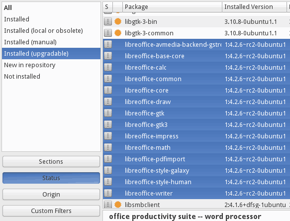
In this particular example, installing the held LibreOffice packages fixes a known bug. This was first tested on a working system, then the public was notified that it was safe to do.
GOLDEN RULE: If your system if working fine, do not be tempted to force installation of held packages, if it's working you don't need it. This includes held kernel updates. Remember the old saying, "If it ain't broke, don't fix it".
Change your Software Updates Country Location
To ensure that you get your updates and software downloaded
as fast as possible, try selecting a location close to you.
In the following tutorial we will show you how to do this.
Click on Menu, System, Install/Remove Software and enter your password.

Synaptic Package Manager will open up, click on Settings, Repositories.

The Software Sources window will pop up. From the Download from: drop down box, select Other...

A Choose a Download Server box will pop up. From here select your country, and then a server, preferably an Ubuntu server if it is listed or another server if an Ubuntu server is not in the list. Click on the Choose Server button once you have made your selection. Now click on Close in the Software Sources window.

In the top left of the Synaptic Package Manager window, click on the Reload button. This will change all the software sources to your location for faster downloads.

The following window will appear, then close when it has finished.

You should now have faster downloads for updates and software installs in Synaptic Package Manager from a location much nearer you. Click here to learn how to install and remove software.
Installing some of the more widely popular programs on Linux Lite like Chrome, Dropbox and Skype is just a few simple steps on Linux Lite.
Go to Menu, System, Install Additional Software.
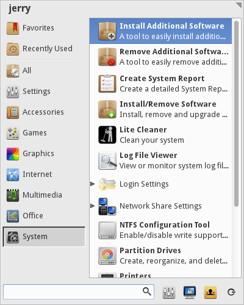
Enter your password and click OK.
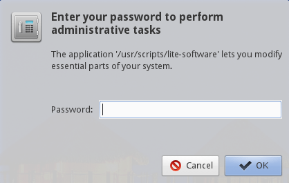
Next, you'll see the following window pop up. Select software to install by placing a check mark in the box next to it. You may choose and install more than one package at a time if you like. In this example we'll choose to install the Password Manager program called KeePassX.
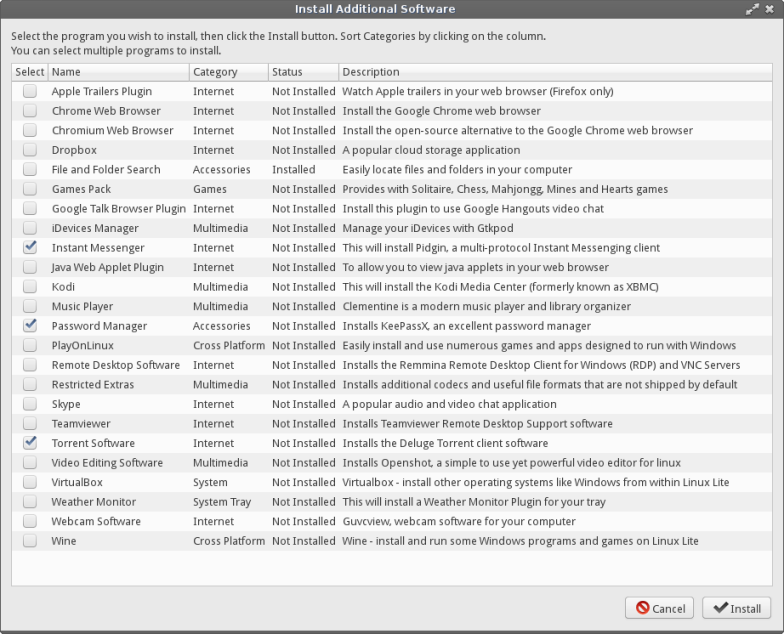
In the next dialog, we can see some information regarding the software we have chosen to install. It pays to read this each time as the information is a very important part of the install process. Click Yes when ready. If you chose more than one package for installation, a separate confirmation window will appear for each one during the install process.
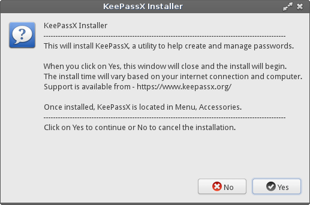
The program is now being downloaded and installed automatically for you. This can take anywhere from a few seconds to a few minutes depending on the size of the program and the speed of your internet connection.
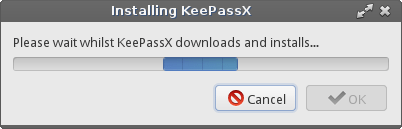
When the install is complete, the dialog box will inform you where to find your newly installed program.
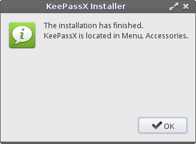
Removing Additional Software in Linux Lite is just a few simple steps.
Click on Menu, System, Remove Additional Software.
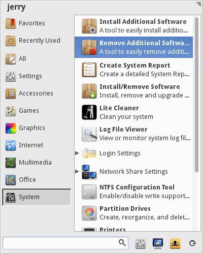
In the next window, we're asked for our password, type in your password and click OK.
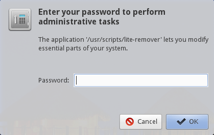
In this example, we'll choose to remove Video Editing Software called Openshot. Place a check mark in the box next to the program you want to remove and click Remove.
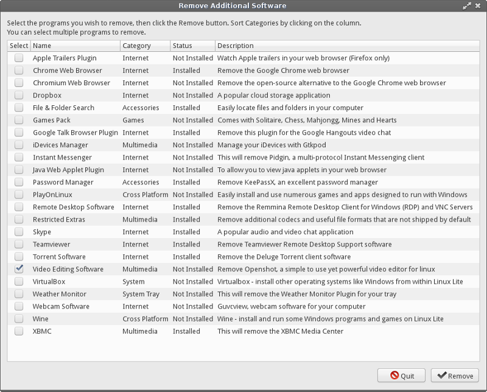
You'll get a confirmation at this point asking if you want to proceed, click Yes to go ahead with the deletion.
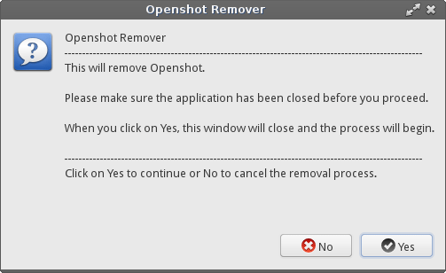
The software is now being removed.
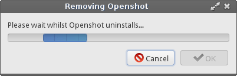
A dialog box will inform you when the removal has been completed. Click OK to close the window.
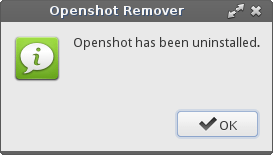
Lite Cleaner is a tool that can be used periodically to clean up your system and free up more space on your hard drive. It will do things like clean out various cached files, remove old dependency packages that are no longer needed, empty your trash and remove old kernels if you have installed new ones.
Lite Cleaner is in Menu -> System -> Lite Cleaner.
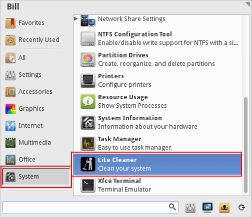
Once opened, the Lite Cleaner window will show various categories of files that can be cleaned and will display in the "Description" column how much space will be freed up by removing them. As an example, we'll use the cleaner to remove an old linux kernel.
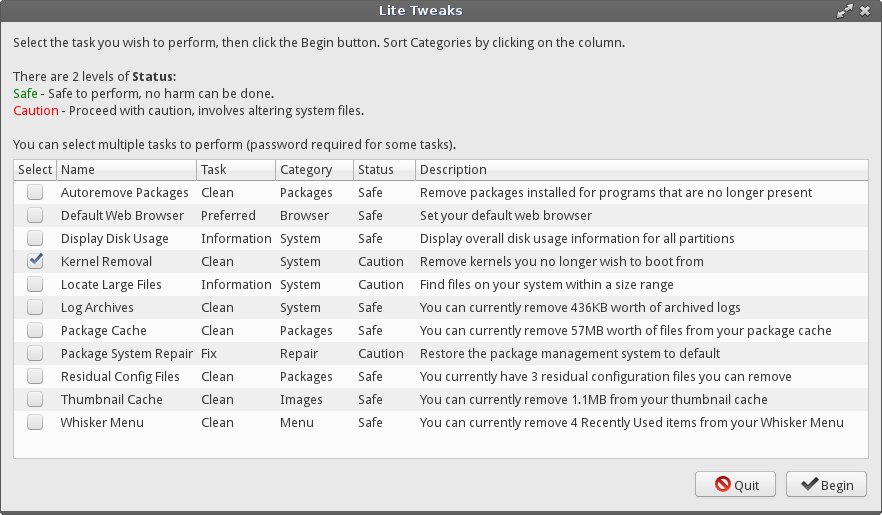
The example computer has three kernels installed to it - the original kernel and two kernels manually added to it later. If you have decided to install newer kernels to your Linux Lite, it is not a bad idea to keep two working kernels on the system. If you end up having problems with one, you will then have the ability to boot into the system with the other one from the grub menu.
The kernel cleaner will only display the kernels that are not currently in use. So in screenshot below only two of the three kernels are displayed. We will remove one of them. To remove a kernel, make sure to select the "image" and "header" files that correspond to the version number of the kernel, then click Begin.
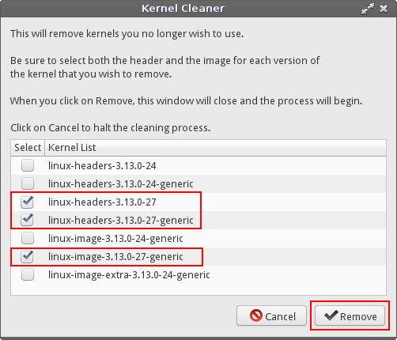
In the screenshot above you will notice that the original 3.13.0-24 kernel and a newer 3.13.0-27 kernel are shown. The newer kernel did not work correctly on this machine, so that is the one selected for removal. Place a check mark in the boxes next to the "image" and "header" files, then click Remove.
A confirmation box will pop-up. Click Yes if you are sure you want to proceed with the deletion.

Enter your password and click OK.

Your kernel(s) will then be removed. (This may take a few minutes.)
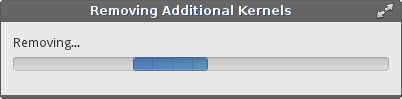
Upon completion, click OK to close the window.

A PPA is a repository containing one or more applications. These are often set up for new software programs or updated versions of some applications. To add a new PPA to your system, follow the guide below.
Go to Menu, System, Install/Remove Programs. Enter your password when asked.
Go to Settings, Repositories.

Click on the Other Software tab and click on the Add
(bottom left) button and paste into the box the address of
the PPA.
In this example, we are going to add Spotify to our
system. Now click on Add Source. To finish, click on
Close.
Close Synaptic Package Manager.

Each PPA comes with a signed key. This is a security measure and ensures that the person who created the PPA has followed strict standards. Open up a terminal and type in the key string:
| sudo apt-key adv --keyserver keyserver.ubuntu.com --recv-keys 94558F59 |

Now in the same terminal type in:
| sudo apt-get update && sudo apt-get install spotify-client |

This will update your sources to include the new Spotify repository. The second part of the command will install Spotify for you. Your new program is now installed and ready to use.

In todays world, security of your personal files is important. Whether your transporting documents on a USB drive or emailing sensitive information to a friend, colleague or company, encryption is a necessary security measure.
1. First we need to install the encryption software, in this example we'll use mcrypt. Encryption algorithms include DES, Blowfish, ARCFOUR, Enigma, GOST, LOKI97, RC2, Serpent, Threeway, Twofish, WAKE, and XTEA.
Open a terminal and type:
sudo apt-get install mcrypt -y
2. Once mcrypt is installed, we'll set a custom right click action in our file manager to make encryption of files super easy. Open up your home folder, click on Edit, Configure custom actions.

3. Click the plus + button on the right and enter in the following information, in the Command box type in:
x-terminal-emulator -t "Encrypt file..." -e "mcrypt %f"

Click on Appearance Conditions tab and tick every box except Directories.

4. Go back to the Basic tab and click on the No icon button and browse to Status Icons, and select the changes-prevent icon and click on Ok, then Ok on the next box.

Your Custom Actions box should now look like this:

5. Now we need to set up the Decrypt option. Repeat step 3 only this time enter in the following information, in the Command box type in:
x-terminal-emulator -t "Decrypt file..." -e "mcrypt -d %f"

Click on Appearance Conditions tab and only tick the Other Files box, leave the rest unticked.

6. Repeat step 4 only this time select the changes-allow icon. The click on Ok, then Ok on the next box.

7. Your Custom Actions box should now look like this:

8. Click on the Close button on the Custom Actions box.
Now we're ready to encrypt a file (only files can be encrypted with this method, not folders)
9. Right click on a file and select Encrypt file.

10. A window will pop up asking you to type in a password, it will then ask you to enter the same password again. Choose a good strong password, a mixture of letters, numbers and characters that you can easily remember.

You can now delete the unencrypted file permanently.
Here you will see we have a new file with the letters '.nc'
attached to the end of it signifying that the file is now
encrypted.

11. To decrypt the file later, right click on the file and select Decrypt file.

12. A window will pop up asking you to type in a password. Enter the password you created in step 10.

As you can see our file is decrypted and ready to view.

If you make any changes to the decrypted file, you need to delete the existing encrypted file and re-encypt the changed file.
Creating and Extracting Zip files
Sometimes we may have a collection of pictures to send someone over email. Good practice is to zip these files up so that the overall size is much less. The following is an example of how to zip files and folders.
Linux Lite supports creation and extraction of these archive file types using the File Roller program: .zip .rar .tar .tar.gz .tar.bz2 .7z
Archive files can be created/extracted through the right-click menu in the file manager, or by going to Menu -> Accessories -> Archive Manager and selecting files to archive or extract from there.
Creating a zip file
From within the file manager, right-click on any file or folder and select Create Archive. The following example will use a file named "file.txt".

A new window will pop up. From here, type in the Filename, eg. "file". Use the drop-down box next to the filename to select the zip extension as the archive type. Choose a location to save the file in, then click on the Create button.

We now have a file called file.zip
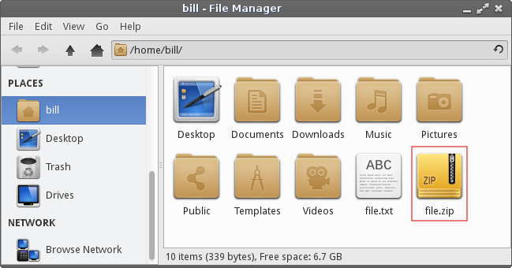
Zipping up multiple files
Best practice here is to place all the files you want to zip up into a folder. In this example we have a folder called holiday and inside 4 files.

Go back to your home folder and right click on the folder
containing the files you wish to zip up.
Right click the folder and select Create Archive

A new window will pop up. From here, type in the Filename of the file (eg. holiday>) and select zip for the archive type extension. Choose a location for the file, then click the Create button.
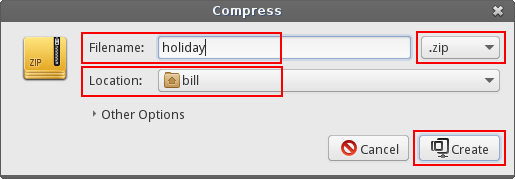
We now have a zip file called holiday.zip
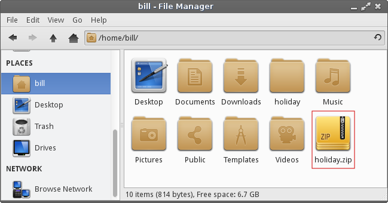
Extracting Zip files
Right click on the zip file and select Extract Here

We how have a folder called holiday, with our 4 files inside of it.
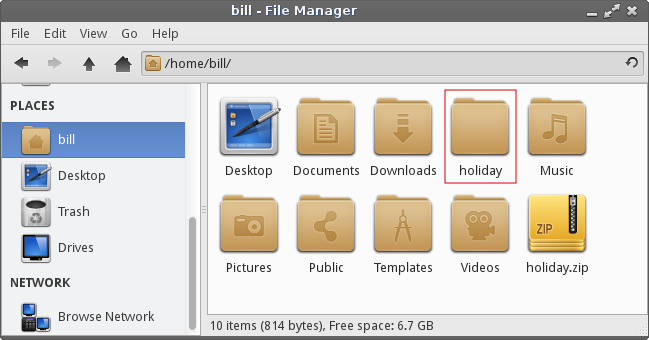
Using Archive Manager (File Roller) from the Menu to create a zip file.
Go to Menu -> Accessories -> Archive Manager to open the File Roller program.
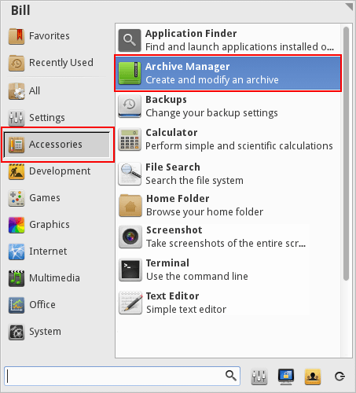
The program will open up to a blank window like below. To create a zip file, click the "Create New Archive" button.

In this example, we'll make a file named "Testing", choose the ".zip" extension type, use the "Location" box to point to where we want to save the files we are zipping, then click "Create".

A window will pop-up where you can add files to your zip archive.
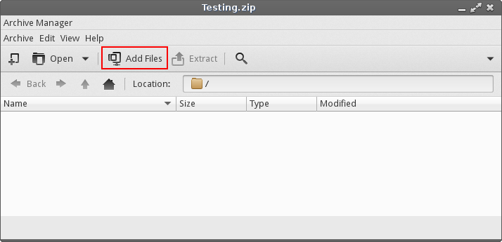
Click Add Files, then in the following window navigate to the files you want to archive and place a check mark in the box(es) next to those you want to include. Once all items are checked off, click Add.

You will then see the files that were added in the Archive Manager window and the zip file will show up where you instructed it to be created. You may close the Archive Manager at this point if you are done.


Using Archive Manager (File Roller) from the Menu to unzip a zip file.
Go to Menu -> Accessories -> Archive Manager, click Open and navigate to the archive file you want, then click Open again.

The files will be displayed in the Archive Manager.

Click Extract and direct them to the location you want them extracted to on the next window.
A pop-up window will notify you that the extraction is done.
If you click Show the Files, it will open the file manager to display their location.
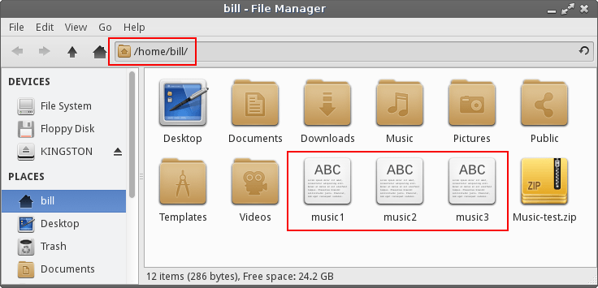
This distro is a heavily modified version of the XFCE desktop environment. However, being GNU/Linux based allows people the freedom to modify their system as they see fit. There are numerous desktop environments in GNU/Linux. Including but not limited to:
Enlightenment
Gnome
KDE
LXDE
Razor-qt
If you desire to install another desktop environment, we cannot provide specific instructions on how to do this. There are far to many variables involved and much can go wrong. This kind of system modification is best left to experienced Linux users. The whole philosophy behind Linux Lite is to provide new users to Linux based operating systems an easy to use, functional desktop experience. Our support time is better spent dedicated to helping existing Linux Lite users on the XFCE desktop.